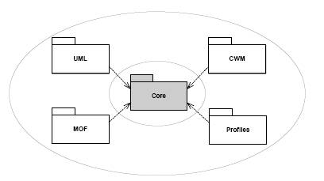
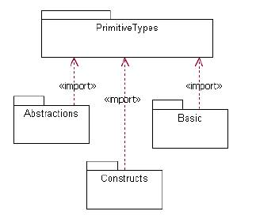
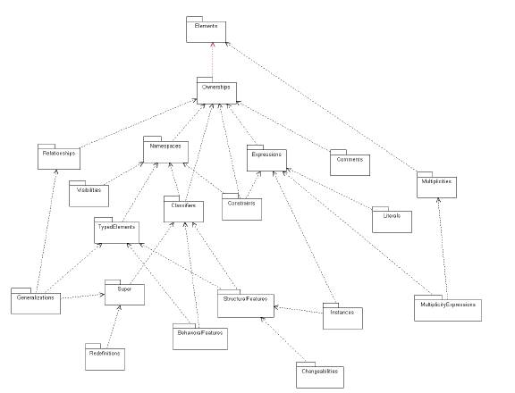
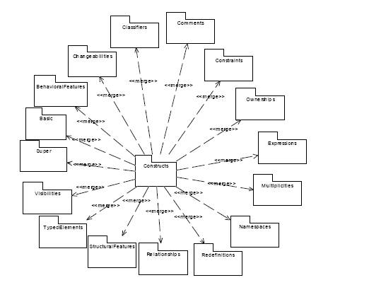

La parte centrale riusabile
della InfrastructureLibrary è il Core package, definito
in modo che elementi della modellazione possano essere condivisi
tra MOF e UML.
Figure 1. Il Core package

Ogni model element di
UML è anche istanza di esattamente un model element in
MOF.
Nel caso di
MOF le metaclassi della
InfrastructureLibrary sono usate come sono,
mentre nel caso di
UML a questi elementi sono fornite proprietà addizionali, per
tenere conto di requisiti specifici.
Il Core package è a sua volta suddiviso
(si veda Riuso in MOF)
in altri packages
:
Figure 2. Core packages

- Il package PrimitiveTypes contiene alcuni tipi predefiniti di uso comune
(Integer, Boolean, String, UnlimitedNatural).
- Il package Abstractions contiene principalmente metaclassi astratte
suddivise in sotto-package (si veda la figura più sotto).
- Il package Constructs contiene metaclassi concrete che inducono
a object oriented modeling (si veda la figura più sotto).
- Il package Basic contiene costrutti-base per la
definizione di un linguaggio di modellazione minimale class-based.
Questi costrutti (Tyeps, Classes, DataTypes, Packages)
sono riusati per la definizione di EMOF
(si veda EMOF e CMOF)
e per la produzione
di rappresentazioni XMI di UML, MOF e altri
metamodelli basati sulla InfrastructureLibrary.
Questi costrutti sono un sottoinsieme dei costrutti definiti in Constructs
che ne fornisce una definzione più complessa che viene riusata
in CMOF e nella Superstructure specification.
Figure 3. Core abstraction packages

Figure 4. Core constructs packages

Le metaclassi-base
Le definizioni dei costrutti-base sono impostate come riportato dai diagrammi
che seguono.